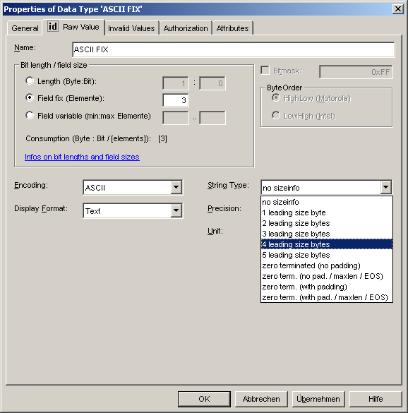
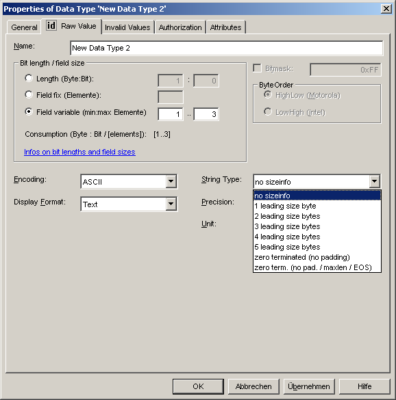
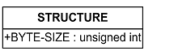
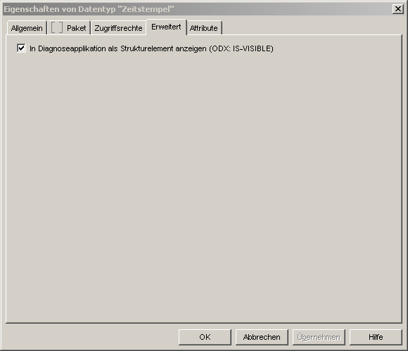
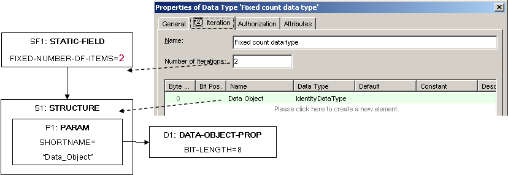
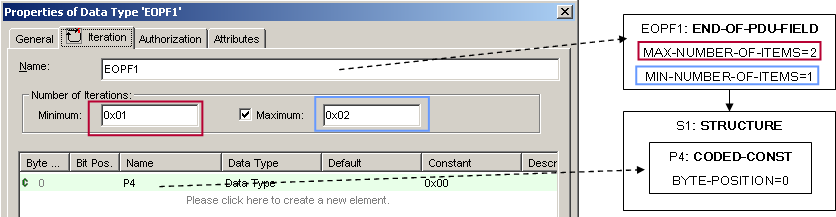
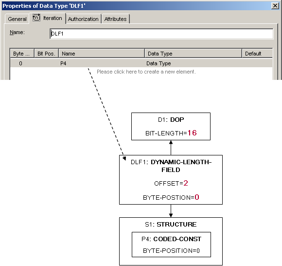
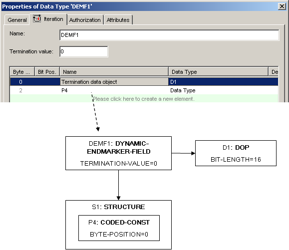
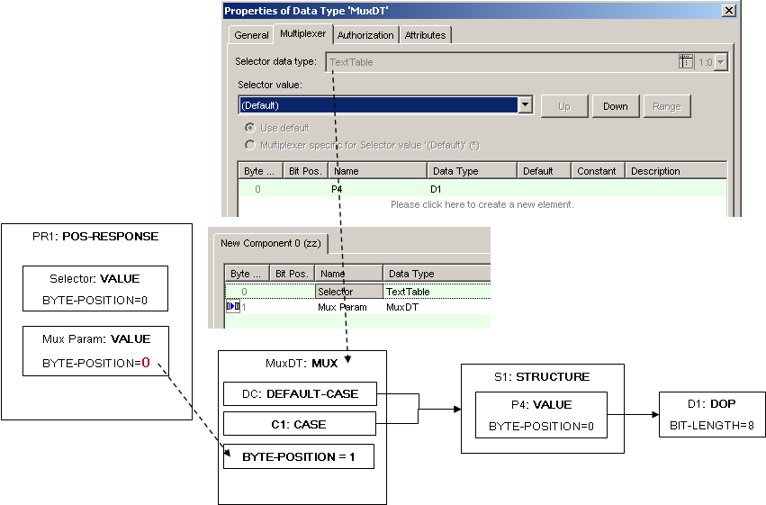
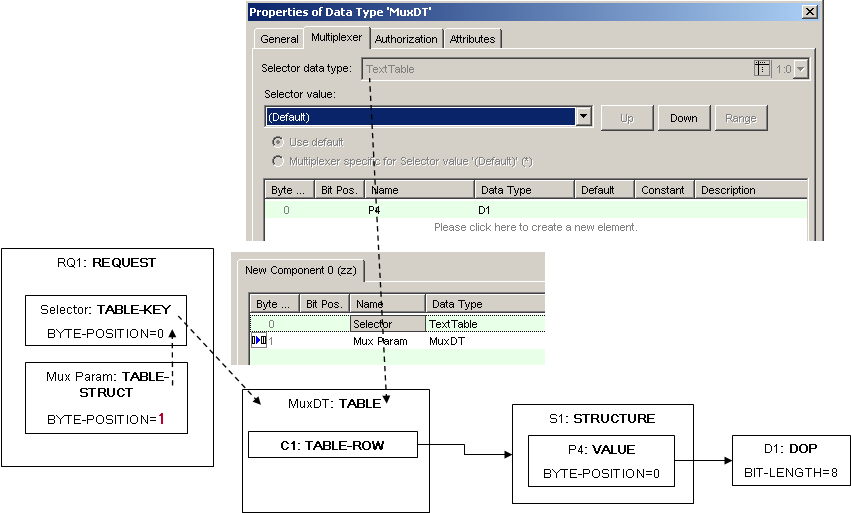

| CANdela data types | ODX simple DOPs |
|---|---|
| Identity | IDENTICAL |
| Linear | LINEAR |
| Piecewise linear | SCALE-LINEAR |
| Text table | TEXTTABLE |
| Characteristic curve | TAB-INTP |
| Formula | IDENTICAL |
| Procedural | COMPUCODE |
Table 29: CANdela data types mapped to ODX simple DOPs
| CANdela data types | ODX COMPLEX-DOPs |
|---|---|
| Packet | STRUCTURE |
Table 30: CANdela data types mapped to COMPLEX-DOPs
INTERNAL-CONSTR must be exported only if there exists a Range-Exclusion in CANdela data model.
The optional attribute IS-HIGH-LOW-BYTE-ORDER is only exported, if it has the value false.
Bitmask is only exported if it is set in CANdelaStudio.
Display format "DECIMAL" with data type float can not be exported to ODX 2.0.1. Therefore no RADIX is exported but precision is set to zero, which should result in the same behaviour.
| Encoding of CANdela atomic data types | ODX BASE-DATA-TYPE | ODX ENCODING |
|---|---|---|
| NumUnsigned | A_UINT32 | NONE |
| numSigned | A_INT32 | 2C |
| numBCD | A_UINT32 | BCD-P |
| numFloat | A_FLOAT32 | |
| numDouble | A_FLOAT64 | |
| charASCII | A_ASCII_STRING | ISO-8859-1 |
| charUtf | A_UNICODE2STRING | UCS2 |
Table 31: Encoding of CANdela atomic data types mapped to ODX ENCODING
| Encoding of CANdela atomic data types | ODX PHYSICAL-DATA-TYPES |
|---|---|
| NumUnsigned | A_UINT32 |
| numSigned | A_INT32 |
| numBCD | A_UINT32 |
| numFloat | A_FLOAT32 |
| numDouble | A_FLOAT64 |
| charASCII | A_UNICODE2STRING |
| charUtf | A_UNICODE2STRING |
Table 32: Encoding of CANdela atomic data types mapped to ODX PHYSICAL-DATA-TYPEs
Note: ODX does not have A_ASCIISTRING as a PHYSICAL-DATA-TYPE
With CANdelaStudio 8.2 SP2 it is possible to use also 64Bit atomic datatypes (Encoding BCD, Unsigned or Signed).
As there is no corresponding representation in ODX, a STANDARD-LENGTH-type datatype with encoding "A_BYTEFIELD" is created.
With 6.0 Release the PHYSICAL-TYPE for linear, scale-linear and ComputationTable-DataTypes is exported as A_INT32/A_UINT32 in case the DisyplayType is specified as Decimal. Up to 6.0 A Float with precision 0 was exported.
| Encoding of CANdela field data types | ODX BASE-DATA-TYPE | ODX ENCODING |
|---|---|---|
| NumUnsigned | A_BYTEFIELD | NONE |
| numBCD | A_BYTEFIELD | BCD-P |
| charASCII | A_ASCII_STRING | ISO-8859-1 |
| charUtf | A_UNICODE2STRING | UCS2 |
Table 33: Encoding of CANdela field data types mapped to ODX ENCODING
| Encoding of CANdela field data types | ODX PHYSICAL-DATA-TYPES |
|---|---|
| NumUnsigned | A_BYTEFIELD |
| numSigned | A_INT32 |
| numBCD | A_BYTEFIELD |
| numFloat | A_FLOAT32 |
| numDouble | A_FLOAT64 |
| charASCII | A_UNICODE2STRING |
| charUtf | A_UNICODE2STRING |
Table 34: Encoding of CANdela field data types mapped to ODX PHYSICAL-DATA-TYPEs
Note: ODX does not have A_ASCIISTRING as a PHYSICAL-DATA-TYPE
[ODXE-R1100-Term65]
In CANdela 6.5 the following termination values are now possible:

Termination values for Fix fields
The following table describes which CANdela definitions for strings can be represented in ODX exactly.
| Termination | Padding | Optional termination | ODX 2.0.1 | ODX 2.2.0 | CANdela 6.0 | CANdela 6.5 |
|---|---|---|---|---|---|---|
| None | No | n/a | - | - | X | X |
| zero-terminated | No | No | - | - | X | X |
| zero-terminated | No | Yes | - | - | - | X |
| zero-terminated | Yes | No | - | - | - | X |
| zero-terminated | Yes | Yes | X | X | - | X |
| Leading-size-byte | No | n/a | - | - | X | - |
Table 35: Support for Fixed Fields
The TABLE below specifies how the CANdela-terminations are mapped to ODX DIAG-CODED-TYPEs
| Termination | Padding | Optional termination | ODX DIAG-CODED-TYPE |
|---|---|---|---|
| None | No | n/a | STANDARD-LENGTH-TYPE*1) |
| zero-terminated | No | No | STANDARD-LENGTH-TYPE*1) |
| zero-terminated | No | Yes | STANDARD-LENGTH-TYPE*1) |
| zero-terminated | Yes | No | STANDARD-LENGTH-TYPE |
| zero-terminated | Yes | Yes | STANDARD-LENGTH-TYPE |
| Leading-size-byte | No | n/a | STANDARD-LENGTH-TYPE*1) |
Table 36: Mapping of Terminations for Fixed Fields
*1) The CANdela termination "zero-terminated / With Padding / Optional Termination" is the only termination which can exactly be represented in ODX. For all other combinations the restrictions in CANdela are different than in ODX. For these cases an ODX-based testing application might handle certain data different than a CANdela-based testing application. For example an ODX based testing application might handle a string as valid whereas a CANdela based system would warn the user that the string does not comply with the restrictions defined in the CANdela file.
From the table above it can be seen that ODX supports only one of the possible termination values available in CANdela 6.5. In case one of the incompatible terminations is used, a warning is emitted. The ODX-compliance check can then be used to detect these data types and adjust them to be ODX compliant.
In CANdela 6.5 the following termination values are now possible:

Termination values for variable fields
The Table below lists which CANdela terminations can be exactly described in ODX:
| Termination | Padding | Termination optional | ODX 2.0.1 | ODX 2.2.0 | CANdela 6.0 | CANdela 6.5 |
|---|---|---|---|---|---|---|
| None | No | n/a | X | X | X | X |
| Zero-terminated | No | No | - | - | X | X |
| Zero-terminated | No | Yes | X | X | - | X |
| Leading-size-byte | No | n/a | X | X | X | X |
Table 37: Mapping of Terminations for variable fields
The mapping to ODX is described in the following table:
| Termination | Padding | **Optional* | ODX DIAG-CODED-TYPE | TERMINATION |
|---|---|---|---|---|
| None | No | n/a | MIN-MAX-LENGTH-TYPE | NONE |
| zero-terminated | No | No | MIN-MAX-LENGTH-TYPE *2) | ZERO |
| zero-terminated | No | Yes | MIN-MAX-LENGTH-TYPE | ZERO |
| Leading-size-byte | No | n/a | LEADING-LENGTH-INFO-TYPE | - |
Table 38: Mapping of Terminations for variable fields
*2) The CANdela termination "zero-terminated / No Padding / No Optional Termination" cannot be represented in ODX exactly. The reason for this is that in ODX the zero termination is optional (i.e. byte can also be a character and not 0x00). In addition it is also valid to specify fewer characters than MIN-LENGTH and fill the rest of the elements with zeros.
In case the UNIT in CANdela consists of only one character (e.g. %) the ODX-Export will map the following characters to their names:
| Character | UNIT.SHORT-NAME |
|---|---|
| € | Euro |
| $ | Dollar |
| % | Percent |
| ° | Degree |
Table 39: UNIT SHORT-NAME mapping
| CANdela "invalid values" | ODX "invalidity" |
|---|---|
| notImplemented | notAvailable |
| invalidSignal | notValid |
| unexpectedResult | notAvailable |
| noSignal | notAvailable |
| undef | notDefined |
Table 40: Mapping of "invalid values" to ODX "invalidity"
In order to avoid violations of Checker-Rule 140-1, it is checked whether a computation is specified for the complete coded value range. When this is not the case, the ODX-Export since 6.0 automatically generates InternalConstraints with Validity "NOT-DEFINED" for these value ranges.
Export of Denominator at COMPU-RATIONAL-COEFFICIENTS only if it differs from 1.
Since CANdela 6.0 it is possible to define the COMPU-INVERSE-VALUE for gradient 0.
Since CANdela 5.5 the invertability is checked.
Since CANdela 6.0 it is possible to define the COMPU-INVERSE-VALUE for gradient 0.
Since version 4.0 empty text tables are exported as DOP with COMPU-METHOD "IDENTIY" since COMPU-INTERNAL-TO-PHYS without COMPU-SCALE is not allowed in ODX. A warning is emitted in this case.
Since CANdela 6.0 it is possible to define COMPU-INVERSE-VALUEs for the Mappings. These are then exported to ODX-COMPU-INVERSE-VALUEs at COMPU-SCALE
Since version 4.0 empty characteristic curves are exported as DOP with COMPU-METHOD "IDENTIY" since COMPU-INTERNAL-TO-PHYS without COMPU-SCALE is not allowed in ODX. A warning is emitted in this case.
Since CANdela 6.0 it is possible to define COMPU-INVERSE-VALUEs for the Mappings. These are then exported to ODX-COMPU-INVERSE-VALUEs at COMPU-SCALE
Since there is no generic formula data type in ODX, export...
Cf. chapter "ODX" at Formula Data Type.
ProcConversion is exported as COMPU-METHOD with category COMPUCODE only if the file name extension is .java, .class or .jar. In other cases a COMPU-METHOD with category IDENTICAL is exported, because ODX only allows PROG-CODEs of those extensions within COMPU-METHOD of a DOP.
The source-file included in CANdelaStudio is also exported to the FileSystem.
Since CANdelaStudio 4.0, a CANdela packet data type is exported as COMPLEX-DOP of type STRUCTURE.

STRUCTURE Schema
If the STRUCTURE has capacity left (is not completely specified) the CANdela ODX export uses a RESERVED data object for the difference between the BYTE-SIZE and the sum of bytes which are used by the specified data objects within the STRUCTURE.
Since CANdelaStudio 6.5, it is possible to control the visibility of packet data types in the diagnostic application. If the display flag at a packet data type is set to true, the IS-VISIBLE attribute in ODX is set to false.

visibility of packet data type in diagnostic applications
[ODXE-R1110-Flat]
If the CANdelaStudio ODX-Export Option "ExtractParamtersOfPacketDataTypes" is set, no STRUCTURE is generated. Instead, the parameters of the packet datatype are exported to the position in the REQUEST/RESPONSE from which the Packet data type was referenced.
To ensure unique SHORT-NAMEs, the SHORT-NAME +"_" of the referencing PARAM is added as PREFIX to the PARAM extracted from the packet data type
To ensure unique LONG-NAMEs, the LONG-NAME +" " of the referencing PARAM is added as PREFIX to the PARAM extracted from the packet data type
If the CANdela Packet data type has the Attribute 'Is-Static-Field' set to true, the Packet is exported as STATIC-FIELD. The number of repetitions is calculated from the CANdela-Packet data type by counting how often a qualifier is repeated.
| CANdela | ODX Field |
|---|---|
| Fixed count iteration data type (for telegram tables) or Iterator End Comp (predefined in CANdelaStudio ProtocolService) | END-OF-PDU-FIELD |
| End-marker iteration data type (for telegram tables) or Iterator End Marker (predefined in CANdelaStudio ProtocolService) | DYNAMIC-ENDMARKER-FIELD |
| Counter iterator data type (for telegram tables) or Iterator Selector (predefined in CANdelaStudio ProtocolService) | DYNAMIC-LENGTH-FIELD |
| Fixed count iterator data type | STATIC-FIELD |
Table 41: Mapping of CANdela FIELDs data types to ODX FIELDs
A data object that references a fixed count iteration data type will be exported as STATIC-FIELD.

STATIC-FIELD
An End-of-service iteration data type will be exported as END-OF-PDU-FIELD.

END-OF-PDU-FIELD
A counter iteration data type will be exported as DYNAMIC-LENGTH-FIELD.

DYNAMIC-LENGTH-FIELD
An end-marker iteration data type will be exported as DYNAMIC-ENDMARKER-FIELD.

DYNAMIC-ENDMARKER-FIELD
A multiplexer data type within a response will be exported as MUX. The BYTE-POSITION of the PARAM that points to the MUX is equal with the BYTE-POSITION of the selector PARAM. If the attribute "Export as TABLE" is set for the multiplexer data type, the ODX-Export will generate a TABLE instead of a MUX.
If a multiplexer data type used in several telegram tables and the offset between the DataObject referencing the Multiplexer-DataType and the selector DataObject is different, for each offset a specific MUX will be generated in ODX.

MUX data type in a POS-RESPONSE
A multiplexer data type that is used in a request will always be exported as TABLE. The ODX-Export will generate a TABLE-KEY for the selector DataObject that points to the TABLE that represents the multiplexer data type. The multiplexer DataObject will be exported as a TABLE-STRUCT that points to the TABLE-KEY.

MUX data type in a REQUEST